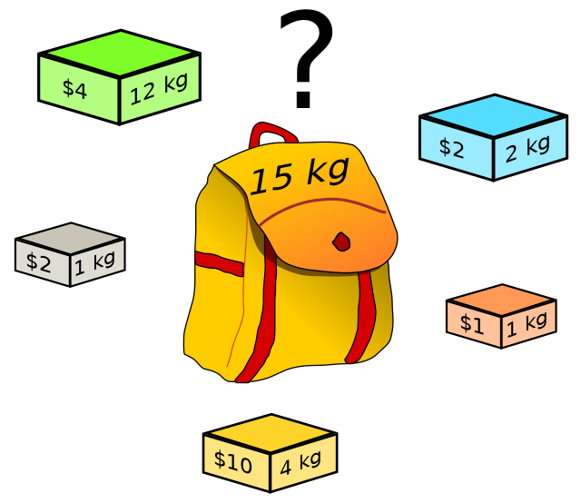

El problema de la mochila (en inglés, knapsack problem), es un problema clásico de optimización combinatoria que busca maximizar el valor total de objetos que pueden ser incluidos en una mochila, dadas ciertas restricciones de peso. En términos más simples, se trata de determinar la mejor combinación de elementos para llevar en una mochila, considerando su valor y su peso, sin exceder la capacidad máxima de la mochila.
El algoritmo de la mochila (knapsack problem) voraz funciona siguiendo un enfoque codicioso para seleccionar elementos que maximicen el valor total de la mochila sin exceder su capacidad máxima. Aquí te explico cómo funciona paso a paso:
El algoritmo de la mochila (knapsack problem) voraz no garantiza una solución óptima en todos los casos, ya que no considera todas las posibles combinaciones de elementos. Sin embargo, en muchos casos, produce resultados aceptables y es más eficiente computacionalmente en comparación con otros enfoques más exhaustivos como la programación dinámica.
Supongamos que tienes una mochila con una capacidad máxima de 15 kilogramos y te encuentras en una tienda de campaña con varios artículos que puedes llevar contigo. Cada artículo tiene un valor asociado y un peso, y tu objetivo es maximizar el valor total de los artículos que puedes llevar en tu mochila sin exceder su capacidad máxima.
El algoritmo voraz seleccionará los artículos de la siguiente manera:
Como vemos en total peso de la mochila es de 8, pero aunque el primer artículo tiene un peso relativamente alto de 12, su ratio de valor por unidad de peso es el más bajo de todos los artículos disponibles (0.33), lo que significa que su valor no compensa el peso que aporta. Por lo tanto, no es seleccionado para llenar la mochila en primer lugar, sino que se priorizan los artículos con ratios más altos que proporcionan más valor por unidad de peso.
El enfoque voraz, aplicado a este problema, busca seleccionar los elementos de manera que, en cada paso, se maximice el valor por unidad de peso. Si bien no garantiza la solución óptima en todos los casos, en muchas situaciones proporciona una solución aceptable con una eficiencia computacional notablemente mejor.
A continuación, presentamos una implementación del algoritmo de la mochila utilizando este enfoque, acompañado de su código correspondiente:
class Item {
constructor(weight, value) {
this.weight = weight;
this.value = value;
this.ratio = value / weight;
}
}
Esta clase Item encapsula los atributos de cada elemento, su peso y su valor, además de calcular su ratio valor-peso.
function knapsack(obj, max_cost) {
const items = Object.entries(obj).map(([n, [c, b]]) => new Item(c, b));
items.sort((a, b) => b.ratio - a.ratio);
let totalValue = 0;
let remainingCapacity = max_cost;
const objetosEnMochila = [];
for (const item of items) {
if (remainingCapacity >= item.weight) {
objetosEnMochila.push(item);
totalValue += item.value;
remainingCapacity -= item.weight;
}
}
return {
objetosEnMochila: objetosEnMochila,
pesoMochila: max_cost - remainingCapacity,
valorMochila: totalValue
};
}
Esta función knapsack recibe dos parámetros: obj, que es un objeto que contiene los elementos disponibles y sus respectivos pesos y valores; y max_cost, que representa la capacidad máxima de la mochila. Devuelve un objeto con tres propiedades: objetosEnMochila, que es un array de los elementos incluidos en la mochila; pesoMochila, que es el peso total de los elementos incluidos; y valorMochila, que es el valor total de los elementos incluidos.
En este apartado pobra interacturar sobre el algoritmo mochila, una vez que se han ingresado los datos, el algoritmo de la mochila puede ser ejecutado para determinar la combinación óptima de objetos que maximice el valor total sin exceder la capacidad de peso de la mochila.